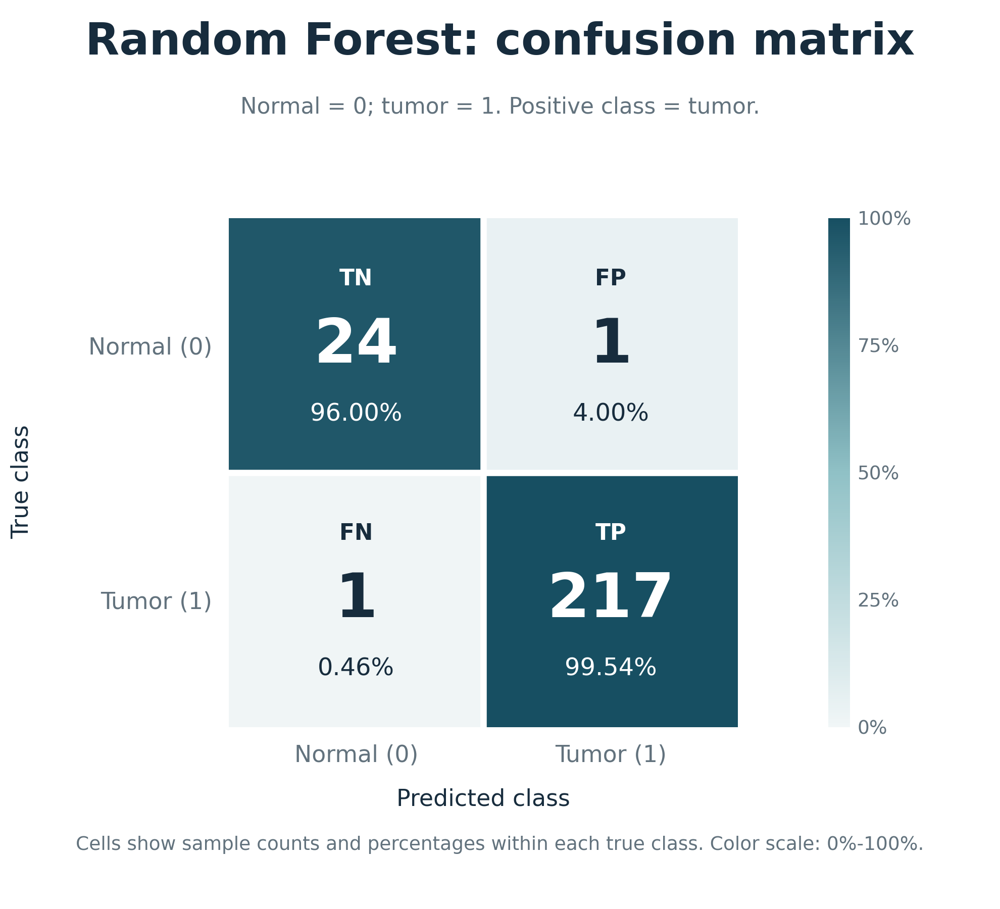
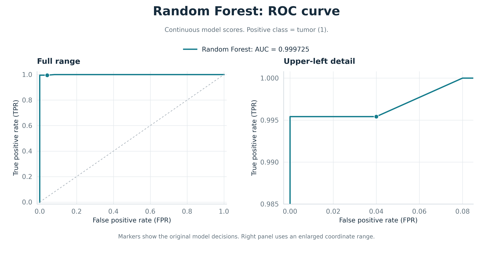
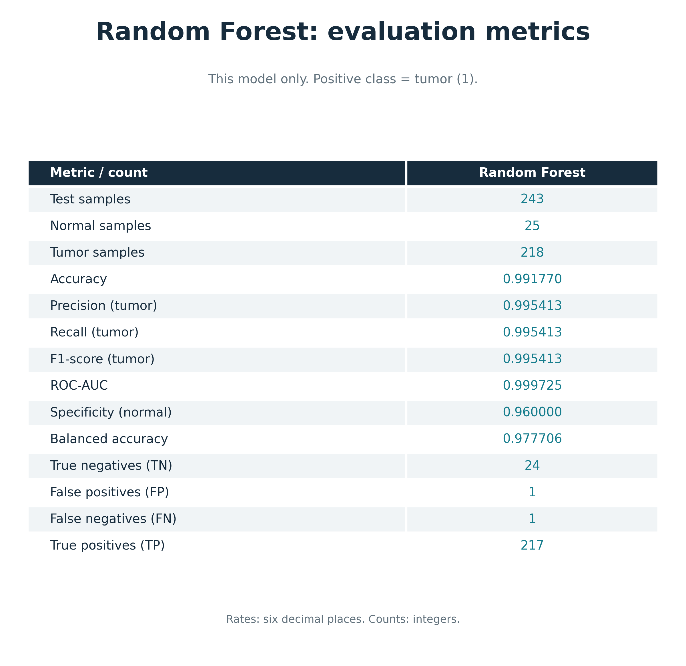
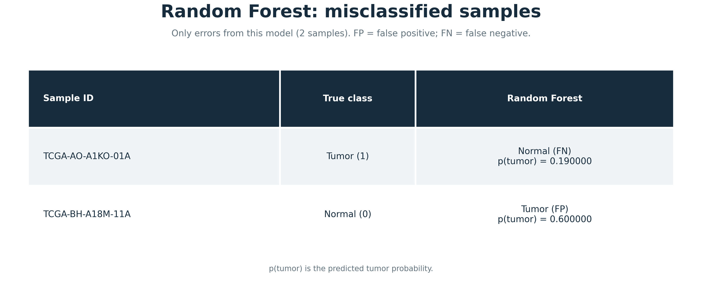

同一批 243 个测试样本，肿瘤为正类（1），正常组织为负类（0）。单模型结果与对比结果分别展示。
展示本模型的 TN、FP、FN、TP，数量和真实类别内的比例同时标注。

仅显示本模型，左侧完整范围，右侧局部放大。横轴为假正例率，纵轴为真正例率。

仅显示本模型的七项指标，以及正常、肿瘤样本数和混淆矩阵计数。

只列出本模型判错的样本，标出真实类别、预测类别、FP/FN 及对应分数。
